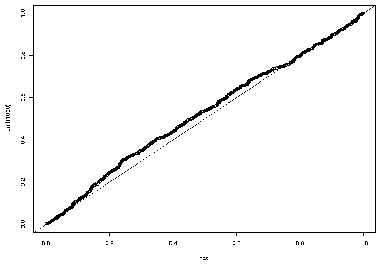

t-Tests
1 t-tests
One of the most common tests in statistics is the t-test, used to determine whether the
means of two groups are equal to each other. The assumption for the test is that both
groups are sampled from normal distributions with equal variances. The null hypothesis
is that the two means are equal, and the alternative is that they are not. It is known
that under the null hypothesis, we can calculate a t-statistic that will follow a
t-distribution with n1 + n2 - 2 degrees of freedom.
There is also a widely used modification of the t-test, known as
Welch's t-test
that adjusts the number of
degrees of freedom when the variances are thought not to be equal to each other.
Before we can explore the test much
further, we need to find an easy way to calculate the t-statistic.
The function t.test is available in R for performing t-tests. Let's test it
out on a simple example, using data simulated from a normal distribution.
> x = rnorm(10)
> y = rnorm(10)
> t.test(x,y)
Welch Two Sample t-test
data: x and y
t = 1.4896, df = 15.481, p-value = 0.1564
alternative hypothesis: true difference in means is not equal to 0
95 percent confidence interval:
-0.3221869 1.8310421
sample estimates:
mean of x mean of y
0.1944866 -0.5599410
Before we can use this function in a simulation, we need to find out how to
extract the t-statistic (or some other quantity of interest) from the output
of the t.test function. For this function, the R help page has a
detailed list of what the object returned by the function contains. A general
method for a situation like this is to use the class and names
functions to find where the quantity of interest is. In addition, for some
hypothesis tests, you may need to pass the object from the hypothesis test to
the summary function and examine its contents. For t.test it's
easy to figure out what we want:
> ttest = t.test(x,y)
> names(ttest)
[1] "statistic" "parameter" "p.value" "conf.int" "estimate"
[6] "null.value" "alternative" "method" "data.name"
The value we want is named "statistic". To extract it, we can use the
dollar sign notation, or double square brackets:
> ttest$statistic
t
1.489560
> ttest[['statistic']]
t
1.489560
Of course, just one value doesn't let us do very much - we need to generate many such
statistics before we can look at their properties. In R, the replicate function
makes this very simple. The first argument to replicate is the number of samples
you want, and the second argument is an expression (not a function name or definition!)
that will generate one of the samples you want. To generate 1000 t-statistics from testing
two groups of 10 standard random normal numbers, we can use:
> ts = replicate(1000,t.test(rnorm(10),rnorm(10))$statistic)
Under the assumptions of normality and equal variance, we're assuming that the statistic
will have a t-distribution with 10 + 10 - 2 = 18 degrees of freedom. (Each observation
contributes a degree of freedom, but we lose two because we have to estimate the mean
of each group.) How can we test if that is true?
One way is to plot the theoretical density of the t-statistic we should be seeing, and
superimposing the density of our sample on top of it. To get an idea of what range of
x values we should use for the theoretical density, we can view the range of our
simulated data:
> range(ts)
> range(ts)
[1] -4.564359 4.111245
Since the distribution is supposed to be symmetric, we'll use a range from -4.5
to 4.5. We can generate equally spaced x-values in this range with seq:
> pts = seq(-4.5,4.5,length=100)
> plot(pts,dt(pts,df=18),col='red',type='l')
Now we can add a line to the plot showing the density for our simulated sample:
> lines(density(ts))
The plot appears below.
Another way to compare two densities is with a quantile-quantile plot. In this
type of plot, the quantiles of two samples are calculated at a variety of points
in the range of 0 to 1, and then are plotted against each other. If the two
samples came from the same distribution with the same parameters, we'd see a
straight line through the origin with a slope of 1; in other words, we're testing
to see if various quantiles of the data are identical in the two samples. If the
two samples came from similar distributions, but their parameters were different, we'd
still see a straight line, but not through the origin. For this reason, it's very
common to draw a straight line through the origin with a slope of 1 on plots like this.
We can produce a quantile-quantile plot (or QQ plot as they are commonly known), using
the qqplot function. To use qqplot, pass it two vectors that contain the
samples that you want to compare. When comparing to a theoretical distribution, you
can pass a random sample from that distribution. Here's a QQ plot for the simulated
t-test data:
> qqplot(ts,rt(1000,df=18))
> abline(0,1)
We can see that the central points of the graph seems to agree fairly well, but there
are some discrepancies near the tails (the extreme values on either end of the
distribution). The tails of a distribution are the most
difficult part to accurately measure, which is unfortunate, since those are often the
values that interest us most, that is, the ones which will provide us with enough
evidence to reject a null hypothesis. Because the tails of a distribution are so
important, another way to test to see if a distribution of a sample follows some
hypothesized distribution is to calculate the quantiles of some tail probabilities
(using the quantile function) and compare them to the theoretical probabilities
from the distribution (obtained from the function for that distribution whose first
letter is "q"). Here's such a comparison for our simulated data:
> probs = c(.9,.95,.99)
> quantile(ts,probs)
90% 95% 99%
1.427233 1.704769 2.513755
> qt(probs,df=18)
[1] 1.330391 1.734064 2.552380
The quantiles agree fairly well, especially at the .95 and .99 quantiles. Performing
more simulations, or using a large sample size for the two groups would probably result
in values even closer to what we have theoretically predicted.
One final method for comparing distributions is worth mentioning. We noted previously
that one of the assumptions for the t-test is that the variances of the two samples
are equal. However, a modification of the t-test known as Welch's test is said to
correct for this problem by estimating the variances, and adjusting the degrees of
freedom to use in the test. This correction is performed by default, but can be
shut off by using the var.equal=TRUE argument. Let's see how it works:
> t.test(x,y)
Welch Two Sample t-test
data: x and y
t = -0.8103, df = 17.277, p-value = 0.4288
alternative hypothesis: true difference in means is not equal to 0
95 percent confidence interval:
-1.0012220 0.4450895
sample estimates:
mean of x mean of y
0.2216045 0.4996707
> t.test(x,y,var.equal=TRUE)
Two Sample t-test
data: x and y
t = -0.8103, df = 18, p-value = 0.4284
alternative hypothesis: true difference in means is not equal to 0
95 percent confidence interval:
-0.9990520 0.4429196
sample estimates:
mean of x mean of y
0.2216045 0.4996707
Since the statistic is the same in both cases, it doesn't matter whether we
use the correction or not; either way we'll see identical results when we
compare the two methods using the techniques we've already described. Since
the degree of freedom correction changes depending on the data, we can't
simply perform the simulation and compare it to a different number of degrees
of freedom. The other thing that changes when we apply the correction is the
p-value that we would use to decide if there's enough evidence to reject the null
hypothesis. What is the behaviour of the p-values? While not necessarily
immediately obvious, under the null hypothesis, the p-values for any statistical
test should form a uniform distribution between 0 and 1; that is, any value in
the interval 0 to 1 is just as likely to occur as any other value. For a uniform
distribution, the quantile function is just the identity function. A value of
.5 is greater than 50% of the data; a value of .95 is greater than 95% of the
data.
As a quick check of this notion, let's look at the density of probability values
when the null hypothesis is true:
> tps = replicate(1000,t.test(rnorm(10),rnorm(10))$p.value)
> plot(density(tps))
The graph appears below.
Another way to check to see if the probabilities follow a uniform distribution
is with a QQ plot:
> qqplot(tps,runif(1000))
> abline(0,1)
The graph appears below.

The idea that the probabilities follow a uniform distribution seems reasonable.
Now, let's look at some of the quantiles of the p-values when we force
the t.test function to use var.equal=TRUE:
> tps = replicate(1000,t.test(rnorm(10),rnorm(10),var.equal=TRUE)$p.value)
> probs = c(.5,.7,.9,.95,.99)
> quantile(tps,probs)
50% 70% 90% 95% 99%
0.4873799 0.7094591 0.9043601 0.9501658 0.9927435
The agreement actually looks very good. What about when we let t.test
decide whether to make the correction or not?
> tps = replicate(1000,t.test(rnorm(10),rnorm(10))$p.value)
> quantile(tps,probs)
50% 70% 90% 95% 99%
0.4932319 0.7084562 0.9036533 0.9518775 0.9889234
There's not that much of a difference, but, of course, the variances in this
example were equal. How does the correction work when the variances are
not equal?
> tps = replicate(1000,t.test(rnorm(10),rnorm(10,sd=5),var.equal=TRUE)$p.value)
> quantile(tps,probs)
50% 70% 90% 95% 99%
0.5221698 0.6926466 0.8859266 0.9490947 0.9935562
> tps = replicate(1000,t.test(rnorm(10),rnorm(10,sd=5))$p.value)
> quantile(tps,probs)
50% 70% 90% 95% 99%
0.4880855 0.7049834 0.8973062 0.9494358 0.9907219
There is an improvement, but not so dramatic.
2 Power of the t-test
Of course, all of this is concerned with the null hypothesis. Now let's start to
investigate the power of the t-test. With a sample size of 10, we obviously aren't
going to expect truly great performance, so let's consider a case that's not too
subtle. When we don't specify a standard deviation for rnorm it uses a
standard deviation of 1. That means about 68% of the data will fall in the range
of -1 to 1. Suppose we have a difference in means equal to just one standard deviation,
and we want to calculate the power for detecting that difference. We can follow
the same procedure as the coin tossing experiment: specify an alpha level, calculate the
rejection region,
simulate data under the alternative hypothesis, and see how many times we'd reject the
null hypothesis. As in the coin toss example, a function will make things much easier:
t.power = function(nsamp=c(10,10),nsim=1000,means=c(0,0),sds=c(1,1)){
lower = qt(.025,df=sum(nsamp) - 2)
upper = qt(.975,df=sum(nsamp) - 2)
ts = replicate(nsim,
t.test(rnorm(nsamp[1],mean=means[1],sd=sds[1]),
rnorm(nsamp[2],mean=means[2],sd=sds[2]))$statistic)
sum(ts < lower | ts > upper) / nsim
}
Let's try it with our simple example:
> t.power(means=c(0,1))
[1] 0.555
Not bad for a sample size of 10!
Of course, if the differences in means are smaller, it's going to
be harder to reject the null hypothesis:
> t.power(means=c(0,.3))
[1] 0.104
How large a sample size would we need to detect that difference of .3 with
95% power?
> samps = c(100,200,300,400,500)
> res = sapply(samps,function(n)t.power(means=c(0,.3),nsamp=c(n,n)))
> names(res) = samps
> res
100 200 300 400 500
0.567 0.841 0.947 0.992 0.999
It would take over 300 samples in each group to be able to detect such a
difference.
Now we can return to the issue of unequal variances. We saw that Welch's adjustment
to the degrees of freedom helped a little bit under the null hypothesis. Now let's see
if the power of the test is improved using Welch's test when the variances are unequal.
To do this, we'll need to modify our t.power function a little:
t.power1 = function(nsamp=c(10,10),nsim=1000,means=c(0,0),sds=c(1,1),var.equal=TRUE){
tps = replicate(nsim,
t.test(rnorm(nsamp[1],mean=means[1],sd=sds[1]),
rnorm(nsamp[2],mean=means[2],sd=sds[2]))$p.value)
sum(tps < .025 | tps > .975) / nsim
}
Since I set var.equal=TRUE by default, Welch's adjustment will not be used unless
we specify var.equal=FALSE. Let's see what the power is for a sample of size
10, assuming the mean of one of the groups is 1, and its standard deviation is 2, while
the other group is left at the default of mean=0 and sd=1:
> t.power1(nsim=10000,sds=c(1,2),mean=c(1,2))
[1] 0.1767
> t.power1(nsim=10000,sds=c(1,2),mean=c(1,2),var.equal=FALSE)
[1] 0.1833
There does seem to be an improvement, but not so dramatic.
We can look at the same thing for a variety of sample sizes:
> res1 = sapply(sizes,function(n)t.power1(nsim=10000,sds=c(1,2),
+ mean=c(1,2),nsamp=c(n,n)))
> names(res1) = sizes
> res1
10 20 50 100
0.1792 0.3723 0.8044 0.9830
> res2 = sapply(sizes,function(n)t.power1(nsim=10000,sds=c(1,2),
+ mean=c(1,2),nsamp=c(n,n),var.equal=FALSE))
> names(res2) = sizes
> res2
10 20 50 100
0.1853 0.3741 0.8188 0.9868
File translated from
TEX
by
TTH,
version 3.67.
On 8 Apr 2011, 15:11.